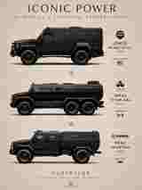
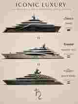
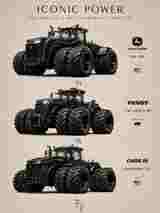
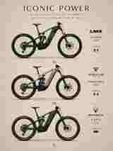

♄
AI Art Direction · Luxury Machines · Future Mythology
KUBERALAB
We don't illustrate machines.
We build their mythology.
We build their mythology.
A visual laboratory for machines that already feel larger than life — supercars, armor, yachts, industrial giants and future mobility. Precision on the surface. Myth underneath.
ENTER THE SERIES ↓Iconic Series 001
Four studies in power, scale and presence. Each visual is treated as a campaign artifact — designed to feel collectible, cinematic and unmistakably KUBERALAB.



Poster → Motion
The image does not end at the frame.
KUBERALAB turns static campaign art into motion concepts. Enter the supercar sequence and watch the poster transform into a seven-second cinematic race.
START THE SUPERCAR RACE →♄
What the Lab creates
Not a stack of generic AI outputs. A coherent visual language built for brands, products, campaigns and cinematic concepts.
Campaign Worlds
Editorial posters, hero visuals and visual systems that make a product feel like it belongs to its own universe.
Motion Concepts
Static-to-motion direction, short-form cinematic prompts, race sequences, reveal films and social campaign ideas.
Visual Mythology
A signature layer of symbolism, atmosphere and identity — including the restrained Saturn seal — so the work feels authored rather than generated.
Japanese Doll Collection
A cultural Instagram and AI-motion project built around an original personal collection of Japanese dolls. Exact identity, refined seven-second animation and verified storytelling.
Living Collection
Traditional dolls transformed into elegant motion portraits without changing faces, garments or symbolic details.
Reels System
Seven-second vertical films, concise English captions, a clear follow call-to-action and no more than five relevant hashtags.
Respectful Research
Doll names, Japanese titles, makers and shops are included only after verification.
Power becomes memorable when engineering gains an aura.KUBERALAB · SATURN SEAL · 2026